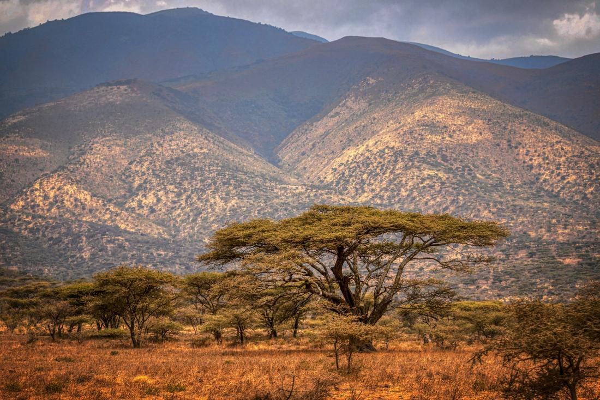
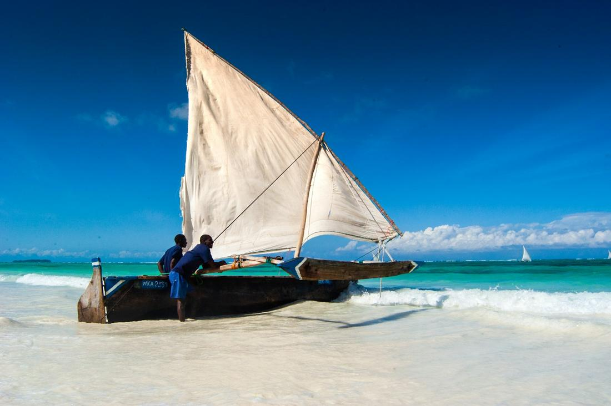

Witness the Great Migration, descend into a wildlife-packed crater, then unwind on Zanzibar's shores.
Tanzania is the safari I recommend to clients who want the real, unfiltered version of Africa's wildlife story - not a curated version, but the actual Great Migration, actual volcanic craters packed with animals, and an actual spice island where dhows still sail past white-sand beaches the way they have for centuries. This is the birthplace of the modern safari, and it shows: the guides are some of the best-trained in the world, the parks are vast, and the density of wildlife in places like the Serengeti and Ngorongoro Crater is almost hard to believe until you're sitting in the middle of it.
What I love most about building a Tanzania trip is how naturally it splits into two halves that complement each other perfectly. The first half is all dust, dawn game drives, and jaw-dropping wildlife encounters across the northern safari circuit. The second half - Zanzibar - is where you trade your binoculars for a snorkel mask and let the Indian Ocean do the rest. Couples looking for a honeymoon that isn't just a beach, adventure seekers chasing the migration, and photographers hoping to capture that once-in-a-lifetime shot all end up telling me the same thing afterward: they had no idea a single country could hold this much.
Here are three excursions I love arranging for clients heading to Tanzania.

This is the package built entirely around one of the most extraordinary wildlife events on Earth: over a million wildebeest and zebra moving in a giant, ancient circuit across the Serengeti in search of fresh grass, with the Grumeti and Mara Rivers as the dramatic pinch points where crocodiles wait and the herds have to cross. I time this trip against where the migration is likely to be, whether that's calving season in the southern Serengeti or river-crossing season further north, so you're not just hoping to get lucky. Days start early with a game drive across the endless golden plains, tracking not just the migration itself but the predators who follow it - lions, cheetahs, and hyenas are never far behind. For clients who want to splurge on one truly unforgettable morning, I always recommend the hot air balloon safari: lifting off before sunrise and drifting silently over herds of wildebeest and grazing giraffe as the plains light up gold below you, followed by a champagne breakfast set up in the bush when you land. We also build in a visit to a Maasai village, where you'll learn about the culture that has coexisted with this wildlife for generations. This is the trip that ends up on people's walls as their favorite photo, always.

Ngorongoro Crater is the single spot I tell clients not to skip, even if time is tight, because nowhere else packs this much wildlife into such a contained, dramatic setting. It's a collapsed volcanic caldera, over 2,000 feet deep and roughly 100 square miles across, and because the walls trap so much of the wildlife inside year-round, a single morning on the crater floor can turn up lion, elephant, buffalo, hippo, flamingo-lined soda lakes, and if you're lucky, one of the crater's famously elusive black rhinos. I build this into a broader northern circuit that also takes in Tarangire National Park, known for its ancient baobab trees and some of the largest elephant herds in Tanzania, and Lake Manyara, where you'll scan the acacia branches for the region's rare tree-climbing lions and watch flocks of flamingos wade along the shoreline. Along the way, we usually stop at Olduvai Gorge, the archaeological site often called the 'Cradle of Mankind,' where some of the earliest hominid fossils on Earth were discovered. It's a full-circuit safari that mixes jaw-dropping wildlife density with a genuine sense of place and history, and I sequence the lodges and drive times so you're never rushing between parks.

After days of dust and dawn wake-up calls on safari, this is the package that lets clients exhale completely. We start in Stone Town, Zanzibar's UNESCO World Heritage old quarter, wandering narrow alleys past carved wooden doors, bustling markets, and the historic House of Wonders, with a stop for fresh seafood at the Forodhani Gardens night market. From there, we head to a spice farm, because Zanzibar earned its nickname 'Spice Island' honestly - you'll walk through groves of clove, nutmeg, cinnamon, and vanilla, tasting and smelling as you go, guided by farmers who've worked this land for generations. Then it's on to the coast, usually Nungwi or Kendwa on the island's northern tip, where the sand is powder-white and the water is the kind of turquoise that looks digitally enhanced until you're standing in it. I always build in a full day of snorkeling or diving around Mnemba Atoll, one of the best reef sites in East Africa, and a sunset dhow cruise on one of the traditional wooden sailboats that have plied these waters for centuries, with drinks in hand as the sky turns pink over the Indian Ocean. It's the perfect, well-earned final chapter to a Tanzania safari.
Prefer to plan together? I'll build your custom package. Already know what you want? Book instantly through my travel portal.